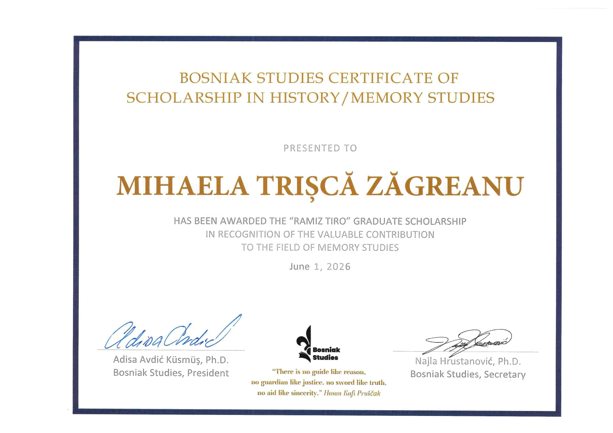

Press Release — June 1, 2026
Bosniak Studies Announces 2026 "Ramiz Tiro" Graduate Scholarship Recipient
Mihaela Trișcă Zăgreanu honoured for her research on oral history, ICTY case law, and Bosniak memory
Bosniak Studies is pleased to announce the recipient of its 2026 Memory Studies Award — an annual distinction recognising outstanding postgraduate research in memory studies, memorialization, and Bosniak memory as it relates to Bosnia and Herzegovina.
About the Award
2026 "Ramiz Tiro" Graduate Scholarship Recipient
Mihaela Trișcă Zăgreanu
PhD Candidate — University George Emil Palade of Târgu Mureș

About the Recipient's Research
This year's award goes to Mihaela Trișcă Zăgreanu, a PhD candidate at the University George Emil Palade of Târgu Mureș, Romania. In her doctoral thesis, Trișcă Zăgreanu explores the genocide in Bosnia and Herzegovina through the lens of oral history and the case law of the International Criminal Tribunal for the former Yugoslavia (ICTY).
Her research aims to illuminate the personal narratives and lived experiences of individuals caught up in one of Europe's most devastating post-war conflicts. By weaving together testimonial accounts with the legal record of the ICTY, she seeks to recover dimensions of the past that institutional history alone cannot capture — giving voice to those who bore witness to atrocity and survived to tell their story.
Through this work, Trișcă Zăgreanu fosters critical reflection on justice, memory, and historical responsibility in contexts marked by violence and political transition — themes that lie at the heart of Bosniak Studies' academic mission.
A Note on the 2026 Selection Process
The award committee evaluated submissions in accordance with the programme's established criteria, with particular attention to the quality and relevance of the research to Bosniak memory and memorialization.
Bosniak Studies congratulates Mihaela Trișcă Zăgreanu on this recognition and looks forward to the contribution her research will make to the field.